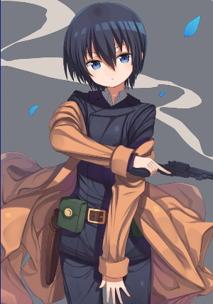
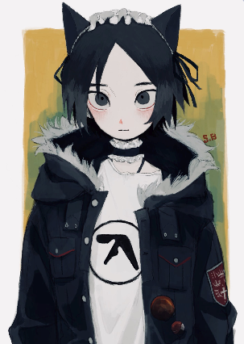
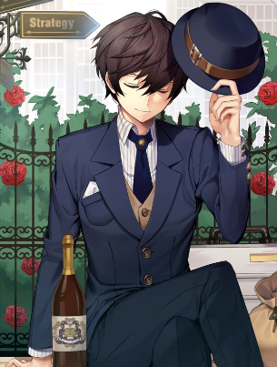
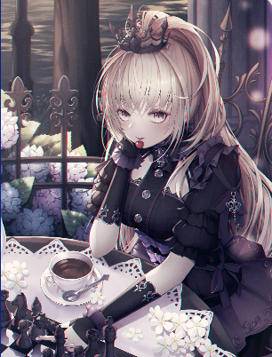
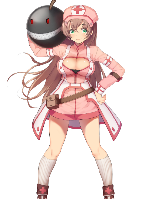
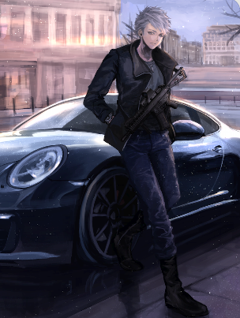
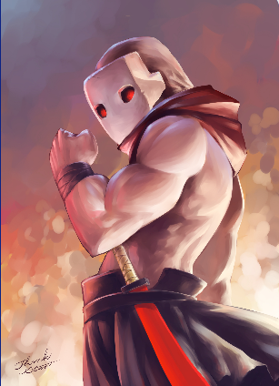
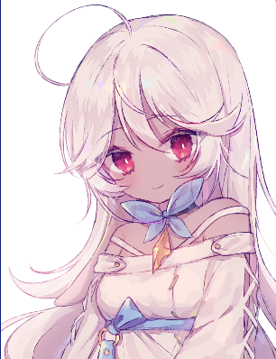

0
0
0
YO! Yeah, you! Get over here, I don’t have a lot of time. Yes, I’m a talking magpie. No, you’re not hallucinating. I’m going to give you a blessing and I need you to not immediately get hit by a goddamn car like the last featherbrain. Anyway, I’m going to make it quick- there’s always supposed to be a certain number of “legendary thieves” in the world and it’s my job to give them their abilities. The previous girl to get my blessing finally died in her sleep after rockin’ 16 total operations, so now I gotta give it to someone else. The only catch is that you have to use your skills and connections (yeah, I’ll introduce you to some peeps) to steal other people’s stuff.
Hmm? Who was the previous thief? You wouldn’t know her – she spent the entire time making sure no one knew her identity and never spending what she stole. She lived in one of those shipping bin houses! Oh, did you mean the jagoff I tried doing this with ten minutes ago? Yeah no, he was just some bloke who happened to be in the right place at the right time, just like you; well, up until he suddenly wasn’t.
Believe it or not, the world needs thieves – and now it’s time for you to be one. Do you want to be rich? Notorious? Prove yourself and you might end up both.
How do you go about getting what you want? Choose one. Note that you can’t change this later in life, and we can’t proceed with the other choices until you pick. Choose carefully!
| Archetype Name | Description | Skills | Crew | Contacts | Free Skill | Purchase |
| Master Thief |
A classic! Comes with fine clothes, charming demeanor, and a smile captivating enough to make people overlook your smugness. Choosing this type means you’re in it for the fame and challenge, not the money. You’ll end up keeping the treasures you steal in your own personal gallery and never think of selling them. You’re also a bit of a loner but hey, who wants to share the limelight? |
9 | 0 | 5 | Cat Burglar | |
| Modern Italian |
The era of showmanship is over, and the best mask is anonymity. The trick is to have a well-executed plan that makes each member of the team “invisible” at all steps. A good middle route for those who find the Master Thief silly and the Shock and Awe too crass, choosing this way means taking what you want and getting out before they realize who could have possibly done it. As a result, you never have any interest in the notoriety of your crimes. |
4 | 2 | 3 | Stealth | |
| Shock and Awe |
People are surprisingly compliant when you have a shotgun pointed in their direction – and walls too, with enough explosives. Blitzkrieg is an apt term – you’re just here for the money. You have a dozen different ways to get rid of the barriers between you and it, though most result in mass mayhem. Your style leaves too much risk to go after anything other than bonds or gold, though. You’re also a lot more reliant on having a well-balanced crew. |
2 | 3 | 3 | Firearms Expert |
What do you want to go after? Choose three. (If you chose Shock and Awe as your archetype, two of your choices are automatically taken as bonds and gold.)
|
Gemstones Some people have apples in their eyes. You have the Millennium Star in yours. |
Paintings Cumbersome, but valuable. |
Cars Of course, you could go for a Bugatti, but never look down on the classics. |
|
Bonds Cash is okay, but why steal something that’s just going to deprecate. You want value in the long term. |
Jewelry Once upon a time, the greatest challenge was to steal a King’s crown. Heck, it’s probably even harder now! |
Information Spies are just a specialized thief. |
|
Gold You know, everyone does a heist for these heavy little bastards once, and never do it again. |
Data You can only rely on hackers for so much. Sometimes it’s easier to just waltz in somewhere and just download what you need. |
Artifacts It belongs in a (different) museum! |
What you bring to the table. I’ll imbue the skills you pick in you so that you instantly become proficient in them. Because of the way it works, you can’t pick the same skill more than once, even if it would make sense to do so.
|
Cat Burglar Cat-like reflexes! Swift-yet-silent footsteps! Amazing purr-kour! Also comes with a set of cat ears and a tail if you’re into that sort of thing. |
Silver Tongue Into social engineering? Whether you need to convincingly lie that you really did “just forget your badge” or spindle a story about how it’s your turn to “take the painting to restoration”, this’ll help. |
Pickpocketing Some people think they’re safe if they put their wallets in their front pocket. You assure them that they are not. Also allows you to “putpocket”, which may come in handy. |
||||||||
|
Hardiness No good heist story went without problems. If you get injured without dying outright, you’ll stay on your feet long enough to patch yourself up or at least to get to extraction. Getting shot twice is pushing it, so wear body armor if you’re going loud! |
Disguise Only amateurs think this means makeup and a uniform. Masters know it means method acting and improvisation; pairs quite well with Silver Tongue. |
Driver For you, the “five-minute window” is how long you need to ensure you’ve shaken the police off your tail. Also teaches you how to drive a stick shift, because no good chase scene was ever filmed in automatic. |
||||||||
|
Firearms Expert Maybe you’re from the States, or perhaps you spent your childhood doing thing you’d really rather not talk about. Regardless, pistols, rifles, and shotguns feel familiar in your hands, allowing you to handle them at a typical soldier level. |
Explosives Expert You know how to apply and use explosives ranging from TNT to C4 – if you can get your hands on them. Also gives you rudimentary knowledge of how to make and use IEDs, but make sure you don’t end up on another watchlist. |
Stealth Stealth isn’t about not being seen; it’s about not being noticed. Beyond just storybook sneaking around, you also know how to blend into a crowd and emulate the immediate area’s gestures and customs to match expectations. |
||||||||
|
CQC Expert Pick two martial arts that involve either no weapon or small, concealable weapons (such as a dagger or cestus). You gain 3rd-dan proficiency (two ranks above blackbelt) in them. |
Subterfuge You sure don’t know how to make things, but breaking them is more fun anyway. You gain an intuitive sense for disruption and destruction. This is a catch-all that ranges from how to shut off the cameras at a fuse box to how to use ECM jammers to even guessing the structural weak points of buildings. |
Know-it-All Pick two types of targets, regardless if you chose them as your own to go after. You become an information specialist in those categories. This allows you to appraise their value, determine if they are fake, keep up in conversations with other specialists (i.e. curators), etc. |
||||||||
|
Tactician When you plan, the pieces just fall into place and you make doubly sure to remove all traces of chance. Not only are the chances of hiccups occurring lessened, but you can also adapt on the fly when encountering something truly unexpected. Also has the side-effect of your crew treating you more like a leader. |
Stamina Grants a large pool of stamina to draw from, because sometimes you just have to run. This will allow you to be able to run for at least a full ten kilometers without losing your breath – this distance is increased if you’re not carrying gear or treasure. Pairs well with Cat Burglar, what with all the parkour. |
Well-Connected Maybe you didn’t have as many skills as everyone else, but that’s because you know who to go to for what. Take either an additional crew member or two contacts.
|
Your crew are the people who are going on heists with you. It’s probably a wise idea to pick those who complement your skills and your preferred style, but you can pick a real oddball if you like. Some even have skills the blessing can’t give, so check them all out! Oh, one more thing – if you plan to be the leader in the crew, you’re going to have to earn their trust. This is easier if you are a Tactician making the plans. (If you chose Master Thief as your archetype, you don’t get any crew unless you got them from elsewhere, you loner.)
|
 Cora Cora’s story is something you’ve heard time and time again – a little introverted girl escapes into books to avoid her life and ends up wanting to be like the heroes in her stories. Problem: she only read either spaghetti westerns or spy novels and somehow got it in her head that she wanted to be a cowboy spy, with the attire to match. Luckily, Cora’s father is a diplomat and was able to get her the training she needed to become a proper infiltrator, but she ended up flunking out on the simple virtue of being “too suspicious”. Since then she’s been a bit of a wanderer, doing jobs both above and below the table to get by. Considering she spent her time growing up in Romania as a British diplomat’s daughter, one has to wonder just how in the world she became that fascinated with cowboys. If you can play along with her persona and take her on holiday somewhere in the States where they do rodeos and all that jazz, you’ll earn a friend for life and she’ll respect you as a leader. Skills: Subterfuge, Firearms Expertise, CQC Expert |
 Max You know, starting with two oddballs probably wasn’t the best choice. Yeah, Max likes to wear those cat ears and maid collar everywhere, and treats it like it’s completely normal. I’m not sure if he cares that people look at him weirdly. He’s a damn good hacker though and can be counted on to get you past electronic door locks with ease. Don’t expect him to wield a gun; the loud noises startle him. The one time he tried, the handgun went completely out of his hands and fell on his toes. Outside of work you can find him in his apartment which has no real furniture but is completely filled with blankets, pillows, and oversized stuffed animals. Max really doesn’t want to hurt anybody. If your plans center around eliminating guards and police, expect multiple disagreements from him and eventually to just disappear on you one day, probably during the heist you need him most. He’s a naturally subservient fellow; he’ll naturally look to you as the leader as long as no blood is shed and you are fair and friendly with the team. Skills: Hacking, Know-it-all (Data) |
|
 Caelius “Caelius” isn’t his real name, it’s just what he goes by. Considering what we’ve had to deal with the others, Caelius is your typical thief. He started out as a con man and slowly branched out as his network increased. He found that people easily trust a refined style so expect him to act high-class both on and off heists. He’s quite skilled at social engineering so you can rely on him to keep the CEO entertained with fake business proposals as the rest of the crew sneak into the office. Caelius likes to keep his work and private life separate, but if you are as high-class as he is then you might bump into him at a gala or concerto or other prestigious event. Once that happens he’ll become more friendly, and if you can maintain a measure of refinement both on and off the job, he’ll gladly follow you as a leader. You’ll always have doubts in your mind about if he’s a true friend, though. Skills: Silver Tongue, Pickpocketing, Know-it-All (Paintings) |
 Andrea Andrea is a planner and schemer, and she’s far better than it that you could ever be. She actually used to work freelance as a contact for any crew that needed her services, but now she’s decided that she wants to lead her own group. If you choose her, she won’t be coming with you on the night of the heist but will instead act as an operator, feeding you a plan through an earpiece, adapting as complications occur. As you might expect for a chess champion who was closeted for her entire youth, her social skills are stunted. She uses a distant, expressionless tone and expects the crew to do what she says – because why would you not? She’s clearly the best tactician here. It’ll be difficult for Andrea to see you as a “leader” because she equates that with her own role. You’ll need to explain to her the differences but she’s not very social without a board in front of her. She’s been wanting to learn how to play Go recently; if you can find time in your private life to spend entire afternoons in mostly-silence playing Go, she’ll warm up to you. You’ll also need to trust her directions implicitly while on a heist. Skills: Tactician (Grandmaster) |
|
 Terri It’s probably written somewhere in the rules of life that if you work with explosives, you’re a complete goof. This is Terri and she’s really fond of painting faces on her bombs. She wasn’t always like this though; once upon a time she was just a college girl who wanted to be a doctor. Turns out that med school is incredibly stressful though, and she ended up blowing her top (ha!) and dropping out. Now she spends most of her time blowing things up on ten acres of now-badlands she owns somewhere outside Nice. She’s incredibly friendly and can chat with anyone for hours, but her go-to stress buster is explosions, explosions, and more explosions, so don’t get her angry. Terri will want little to do with your crew if no steps in your primary plan state the phrase “then blow it up”. You might be able to placate her if the Plan B involves such terms. If you blow things up during your heist, spend some time with her at her ranch blowing junk up, and maybe let her patch you up if you get hurt (she’s awfully sensitive that she didn’t get her degree), she’ll definitely follow you as the leader. Skills: Explosives Expert, Medic |
 Nikolaus Don’t call him Nick. He hates that. He started out as a soldier and realized pretty quickly that it wouldn’t pay for his car modeling habit, so he became a mercenary instead. Now he’s getting into the heist business in hopes that he can join up with a team going after some sweet wheels. Nikolaus is one of the best drivers you’ll ever meet. Give him an afternoon in the city the heist is in and he’ll have at least four escape routes planned. Off the clock he spends the majority of his time modding, racing, or fixing cars. Considering how much time he spends on his hobby, he’s not much of a conversationalist about any other topic, so he might just drink his lager quietly during any crew party. If one of your targets is cars, Nikolaus will like you almost immediately. If you happen to be an auto nut yourself (or have Know-it-All: Cars), you’ll be able to build a strong rapport incredibly quickly. Otherwise he’ll look up to you as a leader after a few heists if you use his car as the preferred getaway method and not vomit all over his seats while he’s making crazy turns, thank you very much. Skills: Driver, Firearms Expert, Know-it-All (Cars) |
|
 Mask Normally I’d be giving you another complaint right now about another nutjob on the list but, uh, this one’s cuckoo for a completely different reason, and I don’t want my feathers plucked. Yeah, he’s a ninja – or at least, he thinks he is? His default answer to a problem is to “efficiently eliminate” it, so be careful. He won’t consider using any weapons other than his sword, his throwing stars, or his fists, so be ready for that. I have no idea what he uses his money for, because he always goes to a heist looking the same way with the same weapons. He doesn’t talk much, but seems to have a soft spot for oranges, strangely enough. During crew meetings he’ll eat two or three of them. Mask doesn’t seem to want to build friendship with you – or anyone else, for that matter. He’ll listen to your commands if what you say is reasonable and doesn’t go against whatever plans he has set in his mind. If you can show him on your heists that you can also “efficiently eliminate” the problems in your way with stealth and skill, he’ll consider you the leader and listen to all of your commands. Skills: Stealth, CQC Expertise, Cat Burglar |
 Rasha Rasha is a sweet little thing that would be barely old enough to vote, if she was a citizen. She got separated from her parents when they immigrated here eight years ago and was picked up by some unsavory types. They didn’t do anything too harsh to her (there’s a reason she wears the bow-collar) but they did expect her to turn a profit as a pickpocket while they were sheltering her. Listen, if you picked her you’d actually be doing both me and her a favor. She decided on her birthday this year that she’d run away from her conditions and try to make life elsewhere. Now she’s lost in a country she can barely call home with nowhere to go. Rasha will treat you like a leader if you can set her up with a place, whether it’s her own flat or a room in yours. She’ll end up using her own cut of the heist money to first formally buy her freedom from the gang and then second to find her parents, so she’ll be in that situation for a while. I know she’s not as skilled as these other crew members, so in return for giving her “gainful” employment I’ll give you one of my feathers. You can use it to bestow her (and her only) any one skills from the skill list you choose from. Skills: Pickpocketing, Any 1 of Your Skills |
Hmm? How did Rasha help me? It’s a bit embarrassing to mention, but she shooed away a tabby that had me cornered. Anyway, if your choice of crew members makes you want to go back and adjust your skills, feel free. Other than your Archetype, the power doesn’t actually kick in until I say so.
Thanks again for picking Rasha. Pick that extra skill for her that I promised you. It has to be one you already chose, but it CANNOT be one that gives you extra crew or contacts. Don't try me buster. I have a mean peck.
I can give you the numbers for some peeps in the underworld that can help you out. These are all just going to be business relationships, so don’t be thinking you can get a good deal by becoming chummy. Choose as many as your choices allow.
|
Fence Gotta sell what you nick somehow, yeah? The fence will try to find a buyer for the item at the price you’ve listed, and shave a percentage. If you don’t know how much a treasure is worth, then he’ll give you a lowball while selling it for what it can actually get. |
Specialist A specialist in one of the target types. Choose one type when you take this contact. They’re considered a Know-it-All and can give you information on what you’re trying to steal or how much what you’ve stolen is worth – for a small fee, of course. |
Smuggler Stole some artifacts in Egypt, but your fence is in Ukraine? You’re going to need a smuggler. This one is completely trustworthy, don’t worry. |
Information Vendor You would be surprised at the kind of information that is useful enough to be bought or sold. You can sell any information or data you end up stealing here, as well as buy information about your targets. |
Information Vendor (Underworld) Does nothing for you now, but if you manage to impress her by successfully completing heists, she’ll give you more contacts. You get one additional contact per heist, with a maximum of three. |
|
Arms Dealer Allows you to purchase clean firearms and ammo. There’s a pretty wide selection of add-ons, too. You’ll probably need a smuggler to get your weapons into another country, though. |
Explosives Dealer Sells C4, TNT, timers, and various chemicals that help in the bomb-making process. Also has hand grenades and grenade launchers. You’ll probably need a smuggler to get your explosives into another country, though. |
Hacker If you know that somewhere you’re gong has electric locks, you can pay this hacker to give you a set of one-use bypass chips. |
Doctor Network Doctors are obligated to report certain kinds of injuries to the police. I can set you up with a global network that asks no questions and, more importantly, tells no tales. |
Crew Technically I can get you another crew member if you trade in your contacts. But I’ll only allow you to do it once, or else you’ll have no idea what to do. For two contacts, I’ll give you another crew member. |
So there’s one last thing before we’re done. Yeah, getting skills and contacts and such is pretty cool, but you’ll need a few things to actually get started. Pick some gear to help you out. Choose four. Again, because of how the magic works you can’t pick the same one twice.
|
Phone What’s the point of having contacts and crew members if you can’t contact them? This phone piggybacks off a secure cartel’s network, so you can chat and text (but not surf) without worry. I’ll even give you an extra one for each crew member you have. |
Tranq Gun A pistol that shoots tranquilizing darts. Will work safely on humans and dogs alike, knocking them unconscious after about ten seconds. It’s also nearly silent. Only downside is that it needs to be reloaded after each shot. |
Actual Gun What can I say? It’s a pistol. If the country you are in allows you to own this, you get the documentation for it (if you want). Otherwise, hide it well. |
25k Euro Exactly what it says on the tin. I mean, I bet you don’t actually have the funds right now to buy stuff from your contacts, huh? This’ll take care of it, and help you get more mundane gear to outfit your crew. |
|
Attractiveness This is one of my feathers. You can use it once, on yourself (or someone else, I guess) to make them more beautiful. Catches: It doesn’t make you fit and its definition of “beauty” is defined per society, not you. Works well with social engineering. |
Fitness The same feather, with a different enchantment. This one can be used once to make the target slimmer and more toned. Only makes you stronger if you didn’t lift weights already. Works well with social engineering. |
A Pair of Bands Now for what reason might you need these? |
Click the Button below for a summary of the choices you made throughout this CYOA.
Okay, that’s it. If you’ve got any changes to make this is your last chance, because once the blessing is done there’s no way to change what you’re getting or undo it. Satisfied with your choices? Okay, here…you…go!
Yeah, most people don’t feel different when it hits them. Once you start doing things, it’ll come to you. Anyways, now my job is done and yours is just beginning. I want to hear of your exploits.
Maybe I’ll come check on you in a few months. For now, though, you’ll find the crew members and contacts you chose have already been added to you phone. You’ll also find that I am a busy bird and that I will catch you later. It’s swooping season after all and I think I just saw some biker come within ten meters of my nest. Screw that guy.
Oh, and one more thing – look both ways before you cross the street, yeah?
Final Words:
First Things First: Huge shout out to Verconic for being the maker and original creator of this CYOA. I wouldn't have had the inspiration to make this little project if it wasn’t for him. Verconic, if you are reading this, I would like to thank you for originally making the Sleight of Hand CYOA. I immensely enjoyed working on this project and wouldn't have had the opportunity to do it if it wasn't for you. I really wanted to get your express permission to do this before I published it, but it doesn’t look like that was possible. Please contact me at acreed1998@gmail.com if you would like for this web app to be removed and never seen again. I will respect your wishes as the origianl creator of the CYOA.
Second: What is this? This is a little... character sheet, I guess, for anyone who enjoys the Sleight of Hand CYOA to allow one to easily keep track of their build as they progress through the choices of the CYOA.
Third: Who am I? Just some dude/chick/apache helicopter taking some cs (computer science) classes who needed something to do for a project for class. I always wanted to try and create something like this since I started playing through CYOAs. Feedback would be appreciated. Email me @ acreed1998@gmail.com or DM me on reddit @ persona4dan. I know this whole thing is a bit barebones, but I was a bit pressed for time when I was making this so I couldn't do everything I wanted to try out for this.
Fourth: Will I do Another One of These? Maybe? Probably? Could be doing one right now. Let me see what grade I get for this before I proceed. I really wanna hit up one of BigAlAuthor (or TroyXPage as he is currently reffered) or maybe TokhaarGol or maybe even try my hand at doing a huge one like Divine Trials. Probably not for that last one. Took me a whole month to just make this much for a two page CYOA. I don't even want to imagine what a twenty page+ CYOA would take. T_T . We shall see.
Final Words: Anyway, I hope someone gets some use out of this. Once again, Verconic, if you are reading this and want this taken down or modified in any way, just hit me up and I will get it done. Just give me until Thanksgiving to do it though. This whole project should have been graded by my prof. by then.
Instructions: Do I really have to do this? *Sigh* Fine. You have to choose an archetype before you can do anything. Seriously, not a single thing can be selected until you have your archetype selected and the 3 zeroes on the bottom of the screen have changes their values. The middle zero won't change if you pick Master Thief as your archetype due to not getting any crew with your initial choice. Once you have your archetype set in stone, you can pick your choices in the tables by just clicking on the cells. If the cell doesn't have a button in it that means you just click on it to choose it. If it does have buttons in it, use said buttons. Click on section headers to minimize them. I wanted to add a summary button at the end to sum up all the choices made in a lice litter end section, but like I said, didn't have the time for that.
If at any time throughout the CYOA you change your archetype, all of the choices you made in other sections will be lost and the section itself will be reset to it's initial state. Also, for the sake of simplicity I made it that when you choose the contact "Information Vendor (Underword)"" you are immediately given the contact points the description says you would receive after successful heists. Remember, though, that since you have to choose IV(U) as a contact in the first place. The math that is taking place is (contact points - 1 + 3) so you should only see a two point increase in your contact points when you pick it.
That being said, I should probably also state that any options that give or take away extra points in exchange for another type like IV(U), Well-Connected, and the extra crew choice in contacts require that you actually have points left in either catagory for you to be able to choose said option. For example. If you choose Well-Connected and eventually decide you don't want/need the extra crew member, you must first refund said extra crew member before you can deselect Well-Connected. I hope what I said just made sense.Enjoy.